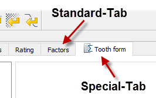

|
|
|


标准和特殊选项卡
大多数计算模块的输入窗口分为不同的选项卡。这确保了输入的逻辑分离。对于更复杂的计算（如圆柱齿轮副），系统不会自动显示所有现有选项卡。当您打开新计算时，只会看到包含绝对必要输入的选项卡。（例如，对于圆柱齿轮副，这将是 和 选项卡。）在 菜单中，您可以根据需要添加更多选项卡（例如，对于圆柱齿轮副，如果要修改齿轮，则需要添加 选项卡）。
KISSsoft 计算模块使用两种类型的选项卡：标准选项卡和特殊选项卡（参见图 5.1）。

图 5.1: 标准和特殊选项卡
如果运行计算时标准选项卡（例如 ）处于活动状态，则将执行基本计算，并且该基本计算的结果将显示在（基本计算）结果窗口中（参见 结果窗口 一章）。当为此数据生成报告时，会创建基本计算报告。
特殊选项卡带有  图标标记。如果在运行计算时此类特殊选项卡处于活动状态，则除了基本计算之外，还会执行特殊计算。（例如，对于圆柱齿轮副，会计算承载啮合线。）（特殊计算）结果窗口 随后会显示附加计算的结果以及基本计算的结果。当生成报告时，也会输出附加计算的结果。
图标标记。如果在运行计算时此类特殊选项卡处于活动状态，则除了基本计算之外，还会执行特殊计算。（例如，对于圆柱齿轮副，会计算承载啮合线。）（特殊计算）结果窗口 随后会显示附加计算的结果以及基本计算的结果。当生成报告时，也会输出附加计算的结果。
Standard and special tabs
The input window for most calculation modules is subdivided into different tabs. This ensures that inputs are separated logically. The system does not automatically display all the existing tabs for more complex calculations, such as for a cylindrical gear pair. When you open a new calculation, you only see the tabs that contain the absolutely essential inputs. (For example, for a cylindrical gear pair, this would be the and tabs.) In the menu, you can add more tabs if needed (e.g. for a cylindrical gear pair, you would need to add the tab if you wanted to modify the gears).
KISSsoft calculation modules use two types of tabs: Standard tabs and special tabs (see Figure 5.1).
Figure 5.1: Standard and special tabs
If a standard tab (e.g. ) is active when the calculation is run, then the basic calculation will be performed and the results for this basic calculation will be displayed in the (basic calculation) Results window (see chapter The Results window). The basic calculation report is created when a report for this data is generated.
Special tabs are marked with the icon. If this type of special tab is active when the calculation is run, then a special calculation will be performed in addition to the basic calculation. (For example, for a cylindrical gear pair, the path of contact under load is calculated.) The (special calculation) Results window then displays the results for the additional calculation along with the results for the basic calculation,. When a report is generated, the results for the additional calculation are also output.